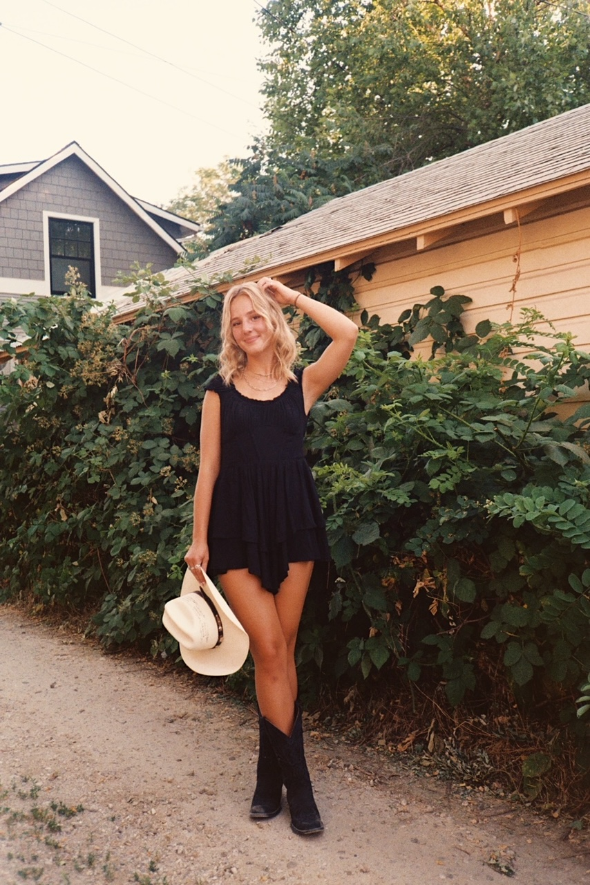
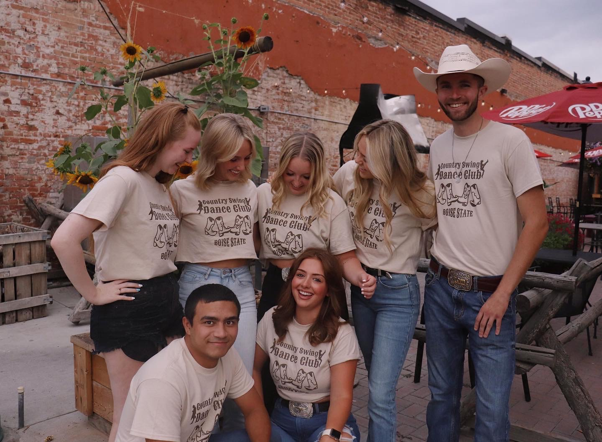
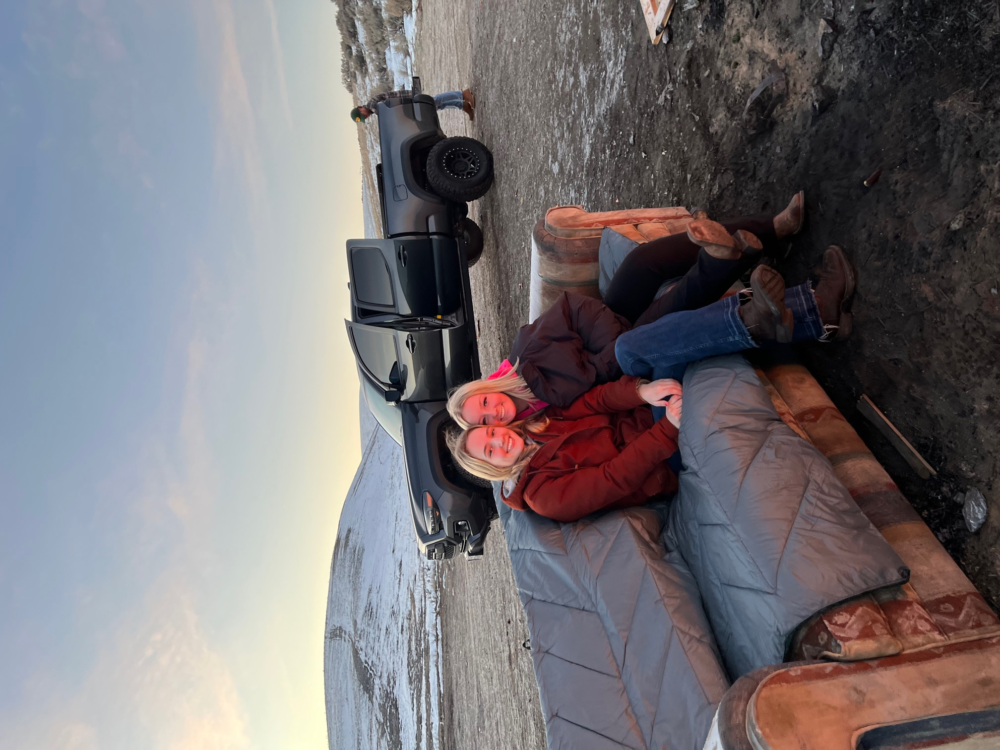
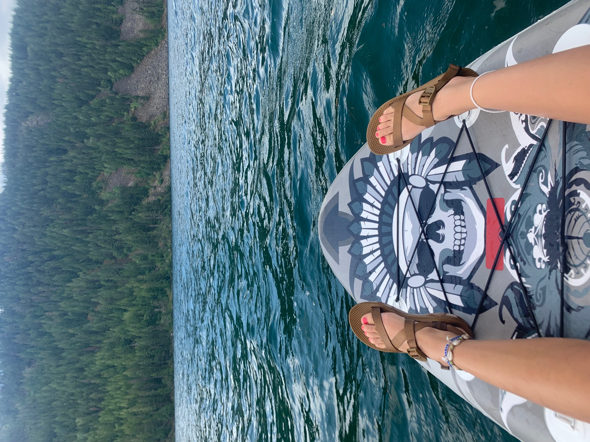
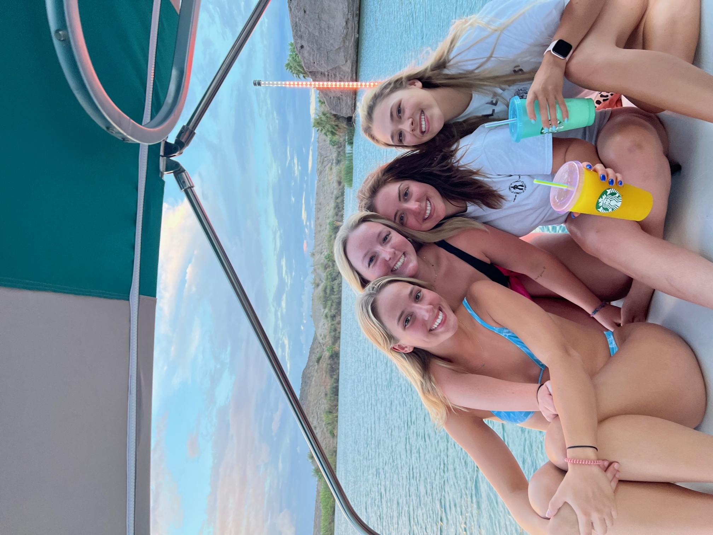
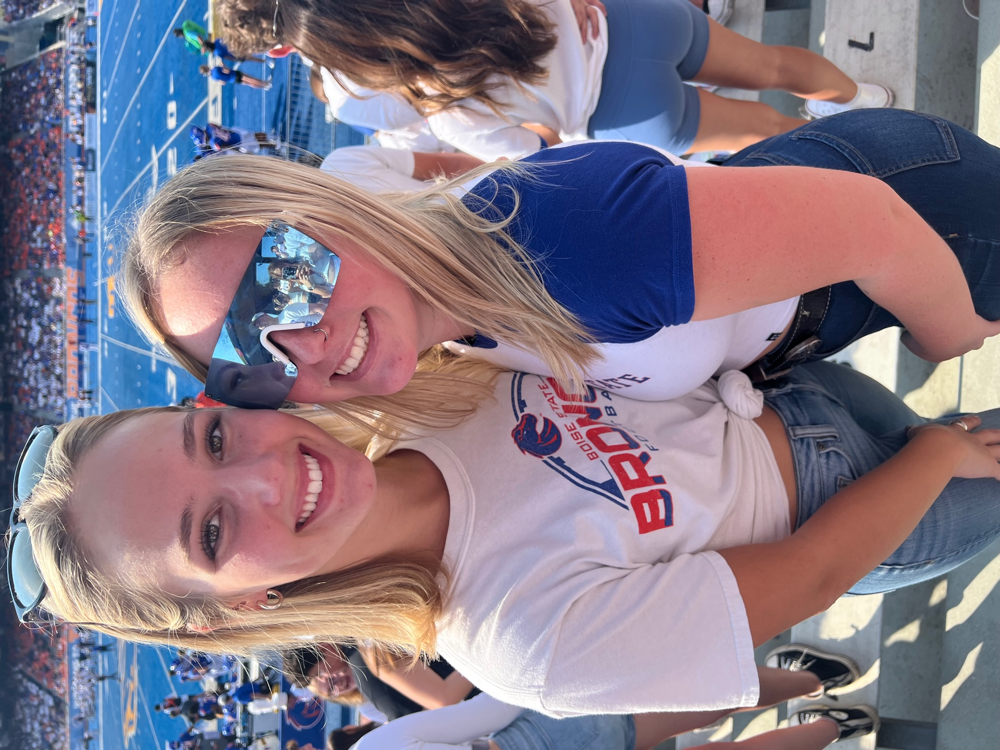
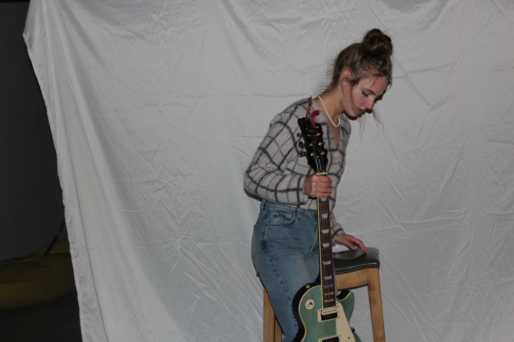
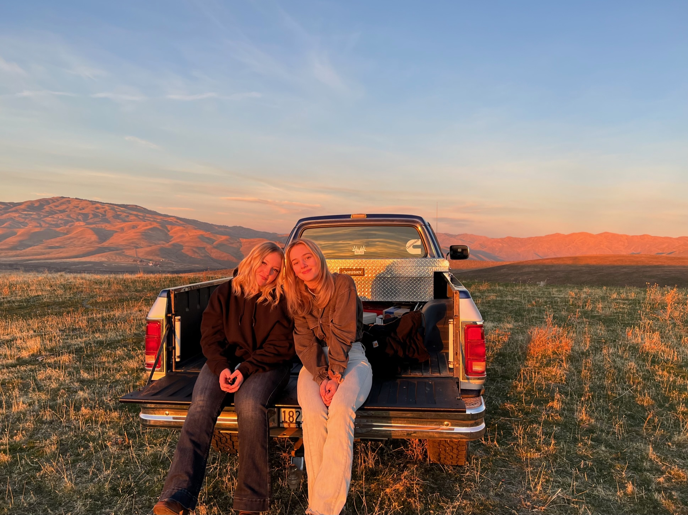

Hello everyone! My name is Haidyn Jones and I am a Junior attending Boise State University! I am majoring in Integrated Media and Strategc Communications with an emphasis in Integrated Media, and have received an Intermediate Spanish Certification. I was born and raised in Meridian, Idaho and am very proud of the area I grew up in. I love everything involving the outdoors, as well as country dancing and videography. I look forward to building my creative portfolio by working efficiently and artistically.
Take a look below to see some photos from my everyday life! You can also click here to view my Instagram.
      